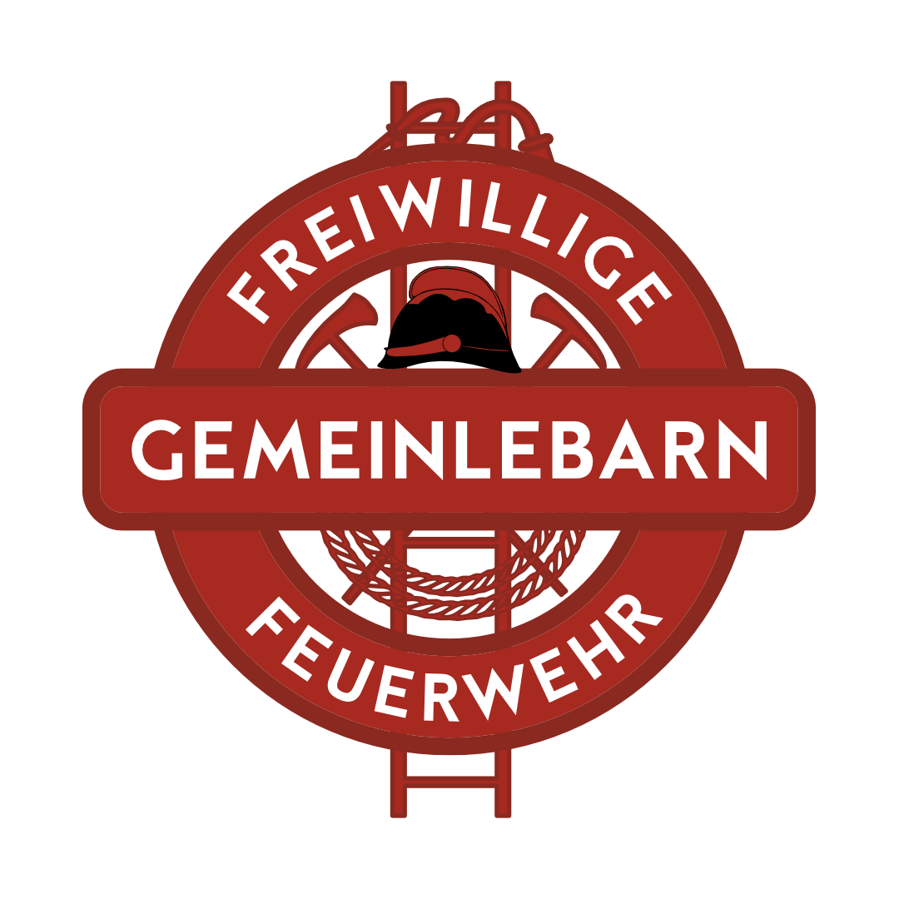

Freiwillige Feuerwehr Gemeinlebarn
Herzlich willkommen und vielen Dank für dein Interesse an unserer Wehr! Es freut uns sehr, dass du mehr über unsere Arbeit erfahren möchtest. Aktuelle Informationen zu unseren Aktivitäten, Einsätzen und Veranstaltungen findest du laufend auf unseren Social-Media-Profilen: